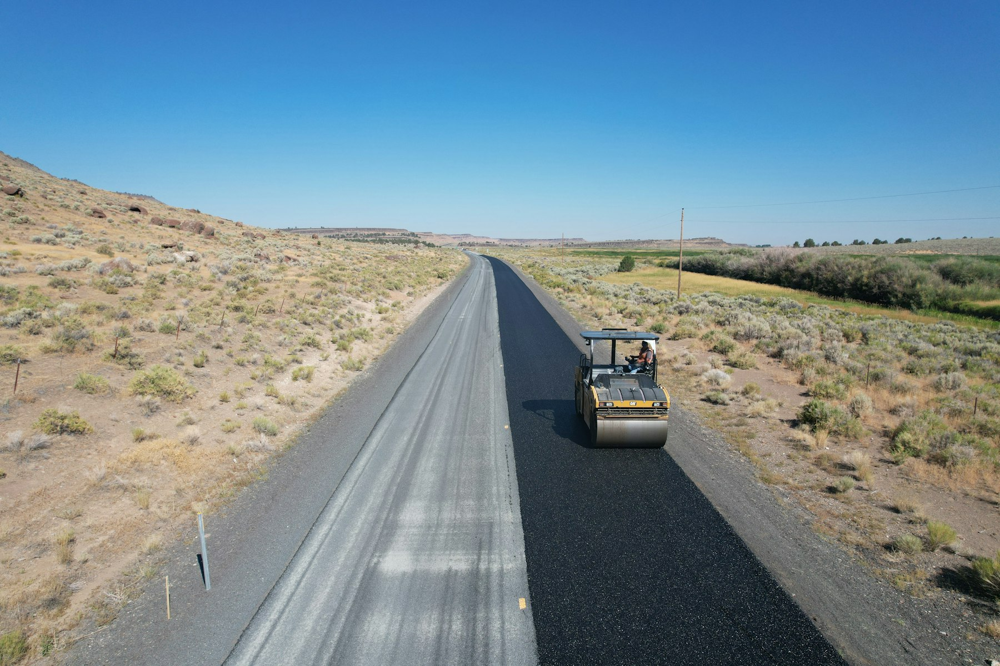
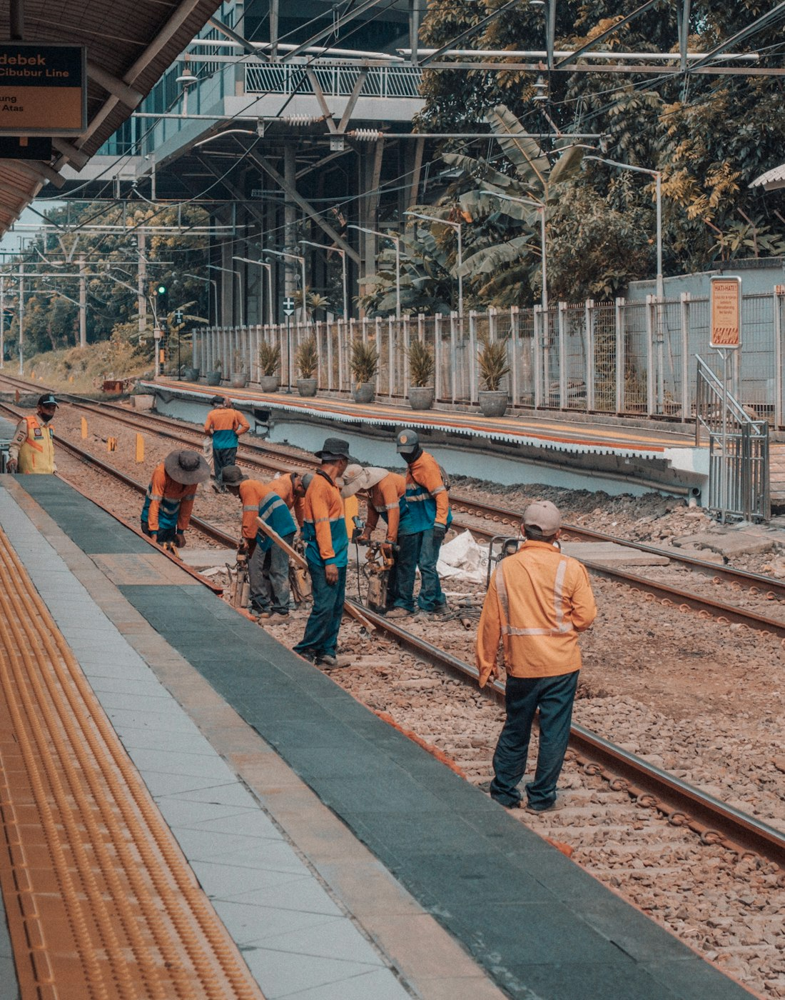
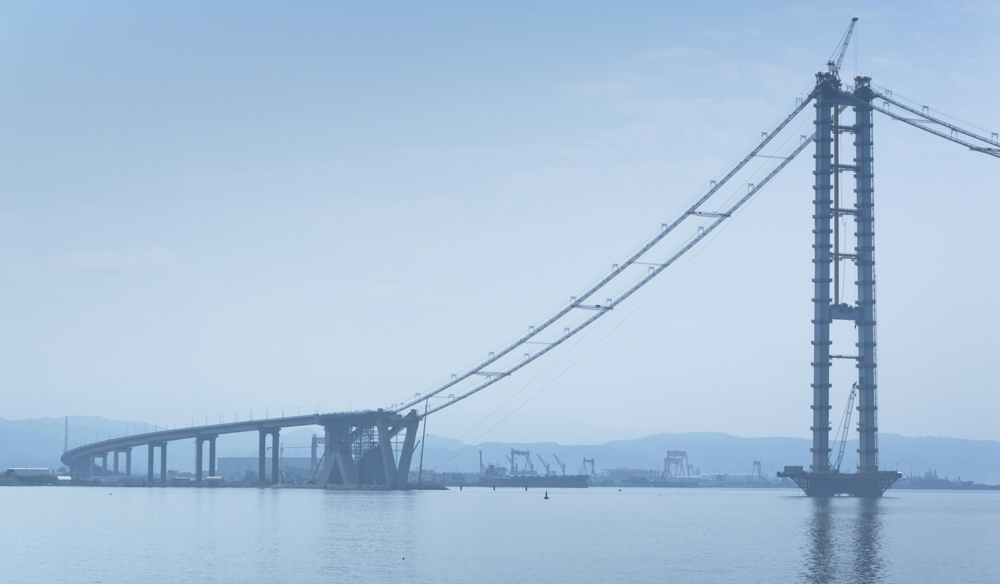
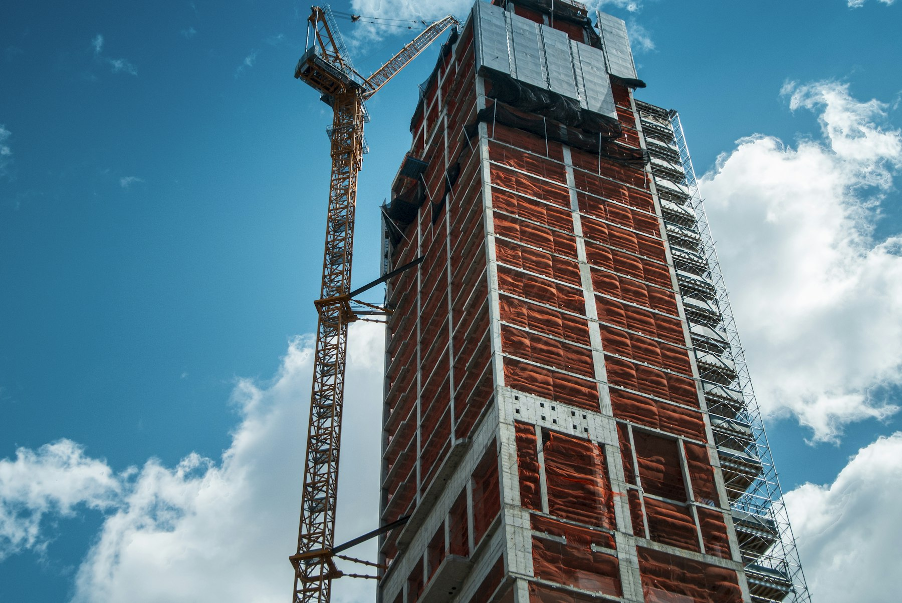
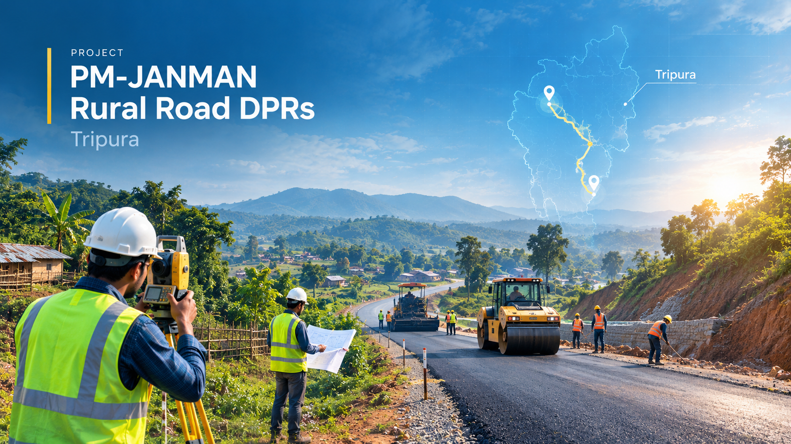
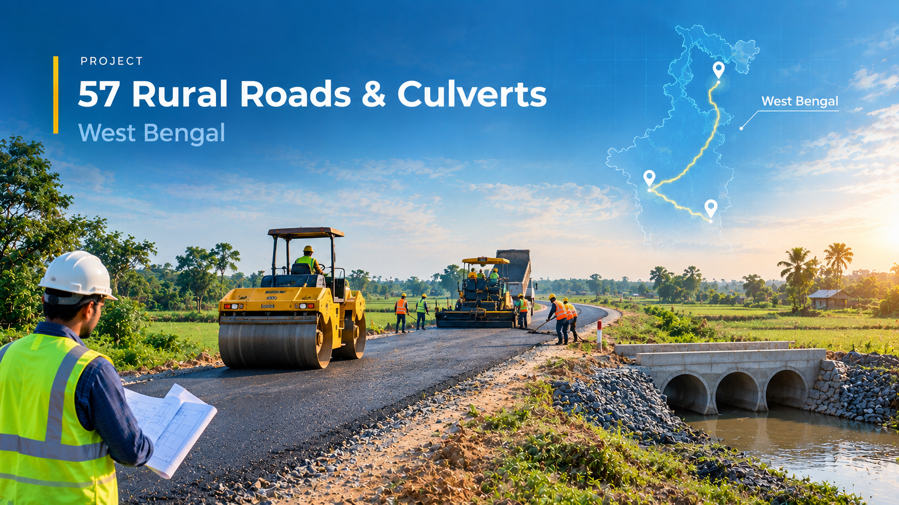

Road & Rural Infrastructure DPRs
Road alignment, pavement design, drawings and estimates.
Road, bridge, rail and building consultancy, from field surveys to Detailed Project Reports (DPRs).

Road engineering
Rail infrastructure
Bridge engineering
Building designEstablished in 2022, Colosseum Engineering supports infrastructure agencies with technical planning and documentation.
Our work spans rural roads, bridges, railway studies, public buildings and related infrastructure across West Bengal and Tripura.
Services tailored to the scope of each assignment.
Road alignment, pavement design, drawings and estimates.
Bridge and culvert design, from preliminary reports to structural drawings.
Final Location Surveys, feasibility studies and railway DPRs.
Topographical, DGPS, LiDAR, river and traffic surveys.
Sub-soil investigation and testing for foundations and piles.
Building DPRs, foundation design, drawings and estimates.
Geo-tagged surveys, GIS mapping and rural-road planning.
Road, bridge and building consultancy.

Tripura
Rural road DPRs, including associated bridges and cross-drainage structures.
View Project
Alipurduar, West Bengal
Survey, investigation and design for a river-bridge DPR in Alipurduar.
View Project
Hatidoba, Cooch Behar, West Bengal
Site investigation, hydrology and design for the bridge at Hatidoba.
View Project
Hedia, Canning-II, Sundarban
Surveys, structural design and estimates for the proposed bridge and approaches.
View Project
West Bengal
DPR preparation for rural roads and culverts under RIDF-XXIX.
View Project
Panchpara, Sankrail, Howrah
Soil investigation, foundation design, drawings and estimates for the new SSK.
View Project
Bishpur, Hingalganj, North 24 Parganas
DPR preparation for the proposed river crossing at Bishpur.
View ProjectSelected agencies and the consultancy work undertaken for them.
WBSRDA · West Bengal
Road and bridge DPRs under PMGSY and RIDF, including surveys, design and technical documentation.
Alipurduar, Cooch Behar, Hooghly, Nadia, North & South 24 Parganas and Jalpaiguri divisions.
TRRDA · Government of Tripura
Road and bridge surveys and DPR preparation under PM-JANMAN, PMGSY-III and PMGSY-IV.
Construction · Garden Reach
Feasibility studies through Final Location Surveys, traffic surveys, DPRs, bridge designs and drawings, and EPC tender documents.
Government of West Bengal
Bridge DPR preparation, river-crossing studies and technical design support in the Sundarbans.
NABCONS
Survey, design and DPR consultancy for rural roads and culverts.
Kumarganj · Bolpur · Egra
Approach-road reconstruction DPRs for RIDF warehouse facilities.
Manu · Santirbazar · Kanchanpur · Kumarghat
Rural-connectivity DPRs covering roads, bridges and cross-drainage structures for unconnected habitations.
Howrah · West Bengal
Building surveys, foundation design, drawings and detailed estimation.
Define objectives and requirements
Investigate site and ground conditions
Assess technical and environmental constraints
Develop designs and cost estimates
Prepare reports, drawings and DPRs
Specialists in rural road and bridge DPRs under government schemes, especially PMGSY, with repeat work from government agencies.
In-house coordination from field investigation through design, estimates and DPR preparation.
Experience with remote hill terrain and river crossings in the Sundarbans delta.
Technical, geotechnical and transportation specialists supported by DGPS, LiDAR, Civil 3D and GIS workflows.
Share your site location, project scope and the support you need by email or WhatsApp.
Kusumba Greens, Narendrapur
Kolkata – 700103
378, Ground Floor, C.R. Park
New Delhi – 110019